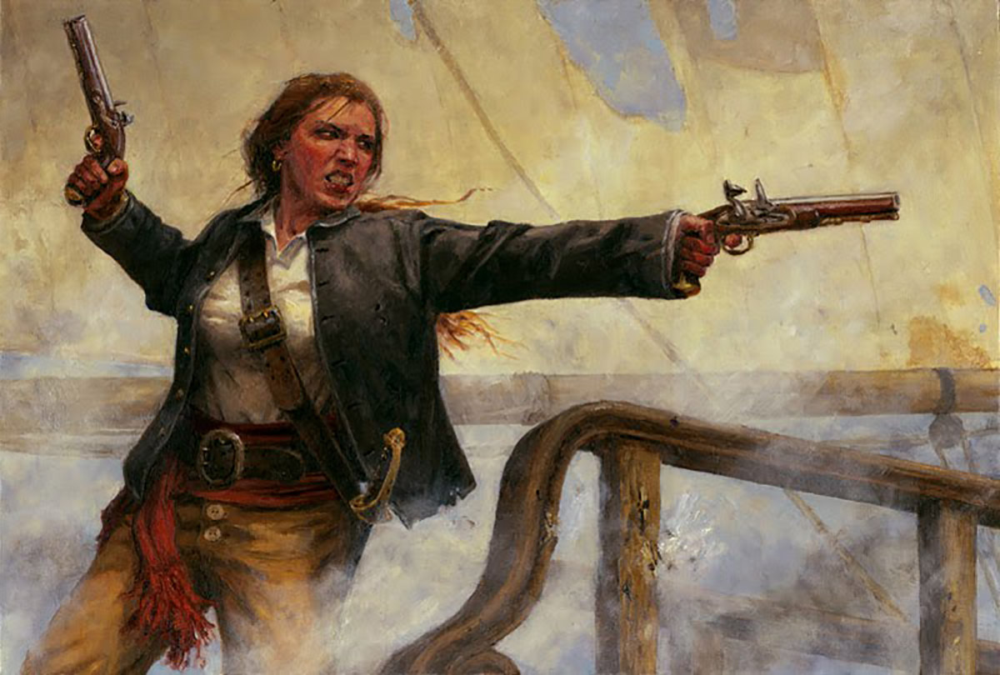
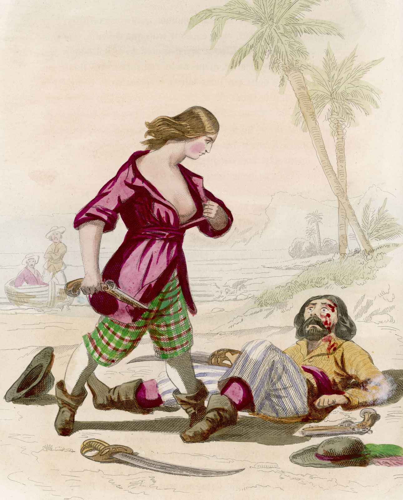
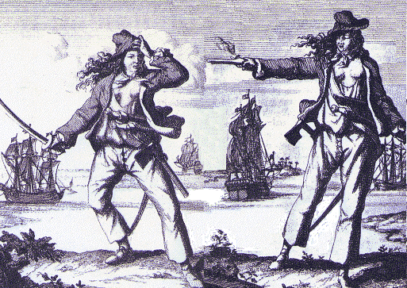

Anne Bonny
Infância
Anne nasceu na Irlanda, em Cork, no dia 8 de março de 1702. Era filha de um advogado com sua criada, algo escandaloso na época. Com o objetivo de diminuir o falatório, seu pai a vestiu como homem, o que não adiantou muito. Então para evitar fofocas, seus pais se mudaram para a Província da Carolina, uma parte da colônia britânica que se tornaria os Estados Unidos. Ali, o pai enriqueceu trabalhando como mercador.
Bonny era conhecida pelo seu temperamento difícil. Ainda jovem, em uma briga, esfaqueou uma servente e bateu em um homem que tentou estrupá-la ao ponto de deixá-lo hospitalizado.
Início da vida nos mares
Com cerca de 16 anos, Anne decidiu se casar com um marinheiro pobre, James Bonny, e nesse casamento ganhou seu sobrenome tão conhecido. Seu pai não concordava com a relação e então os dois fugiram para Nassau, conhecida como República dos Piratas na época.
O marido de Anne arranjou um emprego duvidoso. Ele tinha a função de entregar informações para que o governo conseguisse prender piratas. Anne havia ficado com nojo do trabalho de James, com a convivência com os piratas de Nassau ela começou a apreciar bastante a companhia deles.
Pouco tempo depois Anne conheceu um pirata que ela começou a apreciar além da amizade. Seu nome era John Rackham, ou, como era conhecido, Calico Jack. Ele e Anne começaram um romance que sobrepôs seu casamento. Os dois queriam fazer um acordo com James, lhes dariam uma quantia de dinheiro pelo divórcio. James não quis aceitar e acabou sem mulher e sem dinheiro.
Em 1720, com 18 anos, Anne partiu com Calico para os mares caribenhos em um navio chamado Willian. Tempos depois Anne engravidou, foi para Cuba, teve seu filho e voltou a sua vida aos mares, não se sabe o que foi feito da criança, sabe-se apenas que Anne não tinha nenhum interesse na vida de mãe.
Mary Read
Infância
Mary Read nasceu em 1695, na inglaterra. Era filha de um caso que sua mãe teve, enquanto seu marido, um marinheiro, havia ido para o mar e a deixado só. Ela havia ficado envergonhada sobre a traição e ido para o interior pra se esconder. Ela tinha um filho legítimo homem que tinha morrido perto da época do nascimento de Mary, então com o objetivo de abafar o caso ela fez com que Mary se desfarçasse de menino para poder enganar a família de seu marido e continuar recebendo apoio financeiro. E assim, durante toda sua infância e juventude Mary viveu como homem.
Início da vida nos mares
Como homem, Mary trabalhou como marinheira e se alistou na marinha britânica. Lutou na Holanda contra a França como um bravo soldado. Mary, então, se apaixonou por um soldado e abandonou seu disfarce. Eles se casaram e compraram uma hospedaria na Holanda. Então o marido morreu e rapidamente a história de amor encontrou seu fim.
Mary decidiu se vestir como homem novamente e voltar a trabalhar para a marinha, mas eram tempos de paz e não se tinha muito o que fazer. Ela então largou a marinha e partiu em um navio com direção às Índias ocidentais.
Foi nessa viagem então que Mary, como homem, entrou na tripulação de Calico Jack, também em 1720 aproximadamente. E foi assim que a história dessas duas mulheres se encontrou pela primeira vez.
O momento que duas histórias se tornam uma
"Uma mulher a bordo é sinal de má sorte", era no que os piratas da época acreditavam. Então é de se esperar que surja a pergunta de como Anne Bonny e Mary Read eram aceitas pela tripulação do Willian. Bom, elas não eram como as outras mulheres, eram guerreiras e não davam espaço para qualquer um questionar a posições delas. A costa de Jamaica e Cuba foi, por meses, aterrorizada pelo navio de Calico Jack e suas duas famosas piratas.
Porém, ninguém do barco sabia que Mary era uma mulher. Dizem que Anne começou a se apaixonar por ela e tomou a decisão de se declarar. Foi assim que elas se revelaram e viraram grandes parceiras a bordo, dizem ainda que mantinham um relacionamento entre elas e Jack.
Segundo outros piratas, elas não se vestiam como homem todo o tempo. Somente em ataques a outros navios ou em momentos de perseguição. Dizem ainda que as duas estimulavam os outros tripulantes com gritos e ações. Dizem ainda que quando atacavam um homem, abriam suas blusas para que a última coisa que o homem soubesse antes de morrer é que havia sido morto por uma mulher.
O sucesso como grandes piratas para elas não durou muito. Depois de alguns meses, enquanto toda a tripulação do Willian estava acorada na Jamaica, um caçador de piratas chamado Capitão Jonathan Barnet pegou toda a tripulação de surpresa. Foi tão repentino que todos estavam bêbados e não conseguiram lutar. Todos menos nossas grandes piratas. Anne e Mary lutaram sozinhas, com toda a sua força, furiosamente, para salvar a todos. Elas ficaram tão irritadas pela falta de ajuda que atiraram até nos tripulantes do Willian que não estavam ajudando.
O fim de suas vidas
Jack e seus piratas foram rapidamente julgados e considerados culpados. Todos foram condenados ao enforcamento e a maioria deles foram enforcados dia 18 de novembro de 1720. Dizem que Bonny viu Jack no dia de seu enforcamento e disse para ele "Se você tivesse lutado como homem, não teria que morrer como um cão".
As duas mulheres também foram condenadas ao enforcamento, porém disseram que estavam grávidas. O juiz pediu para que essa informação fosse verificada e ela foi considerada verdadeira e as duas escaparam da morte na forca.
Mary Read teve uma infecção com febre e morreu apenas 5 meses após a prisão. O destino de Anne Bonny é desconhecido, só se tem a certeza de que não foi executada. Alguns dizem que seu pai ressurgiu, pagou a fiança e a levou de volta para a Província de Carolina, onde ela se casou, teve filhos e morreu aos seus 80 anos. Outros dizem que algum soldado deixou sua cela aberta e então ela fugiu, se casou, teve filhos e morreu já idosa.
A história dessas duas incríveis mulheres se tornou conhecida assim que elas foram presas e inspirou muitas lendas de piratas e ainda inspiram até hoje. Graças a elas que mulheres começaram a ser incluídas em histórias de piratas e várias mulheres piratas foram inspiradas nessas duas mulheres. Anne Bonny e Mary Read tiveram mais influência na cultura popular do que jamais tiveram na navegação e comércio da era de ouro da pirataria.